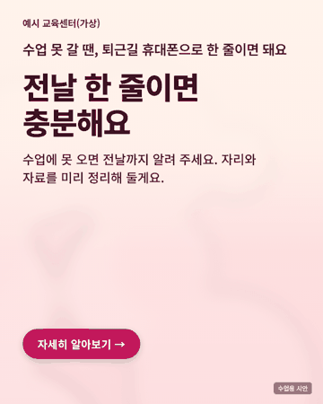
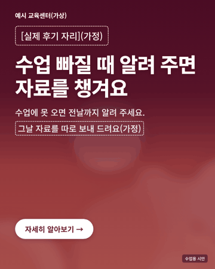

예시 교육센터(가상)· 광고 오늘 저녁 수업, 못 가게 됐나요? 잘된 점짙은 보라 바탕에 흰 헤드라인이 아주 크게 들어가서, 폰에서도 질문이 곧바로 눈에 들어와요. 패턴첫 문장을 질문으로 연다 · 오래 돈 묶음 4개 중 2개 · 나머지 묶음 14개 중 1개 심사보류: 사람 확인 고친 횟수 2 (헤드라인 키움, 버튼 "보강 신청하기") · 배경 사진을 알아볼 수 없음
예시 교육센터(가상)· 광고 수업 못 갈 땐, 퇴근길 휴대폰으로 한 줄이면 돼요  잘된 점수강생의 상황으로 열어서, 결석 연락이 부담스럽지 않다는 말이 다정하게 전해져요. 패턴첫 문장을 읽는 사람 쪽에서 시작한다 · 오래 돈 묶음 4개 중 4개 · 나머지 묶음 14개 중 8개 심사보류: 사람 확인 고친 횟수 2 · 배경 사진을 알아볼 수 없음
예시 교육센터(가상)· 광고 [실제 후기 자리](가정)  잘된 점후기 문장을 지어내지 않고 후기 자리와 확인할 약속을 점선 상자로 분명히 나눴어요. 패턴결과물·후기를 보여 준다 · 오래 돈 묶음 4개 중 1개 · 나머지 묶음 14개 중 1개 심사보류: 사람 확인 고친 횟수 2 · 배경 사진·후기 자리 크기